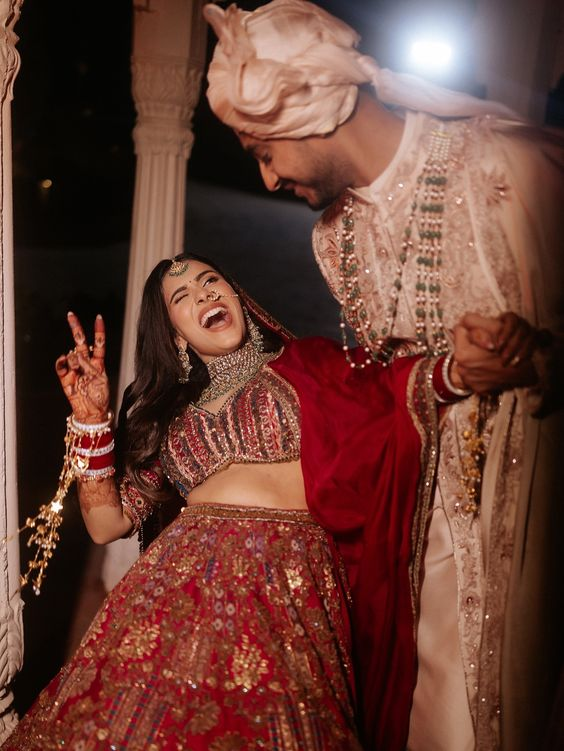

Every couple thinks their wedding will be the exception — the one that stays on budget, keeps every relative happy, and never has a vendor go quiet on WhatsApp for four days. It rarely works out that way. After planning 150+ weddings, these are the six problems that show up almost every time, and what we've found actually resolves them.
1. Budget overruns
Almost no wedding finishes at the original number. Décor upgrades, an extra function nobody planned for, last-minute guest additions — it adds up fast. The fix isn't a stricter budget, it's a realistic one: build in a 10-15% contingency from day one instead of treating every overrun as an emergency. Lock in your top three priorities (usually venue, photography, and food) early, and treat everything else as flexible.
2. Vendor coordination turning into a full-time job
A mid-size Bengaluru wedding easily involves 8-12 vendors — venue, catering, décor, photography, entertainment, makeup, transport. Coordinating all of them on top of a day job is where most couples burn out. The vendors themselves aren't usually the problem; the lack of a single point of contact managing timelines between them is. This is the single biggest reason couples bring in a planner, even for a handful of specific functions.
3. Family expectations pulling in different directions
Guest list size, ritual sequencing, "who gets invited to what function" — these conversations get emotional fast, especially across two families with different traditions. Settling this early (ideally before venue booking, since capacity depends on it) avoids re-litigating the guest list three months in.
4. Venue and vendor availability
The best Bengaluru venues and photographers get booked 8-12 months out during peak wedding season (November to February). Couples who start venue hunting less than 4 months before their date often find their preferred options already gone, which cascades into every other decision.
5. Decision fatigue
Somewhere around the 40th vendor call, most couples stop being able to tell a good décor option from a mediocre one — everything starts to blur together. Batching similar decisions (all décor meetings in one week, all catering tastings in another) instead of spreading them out helps keep judgment sharp.
6. Weather and outdoor contingencies
Garden and outdoor venues are popular in Bengaluru, but even in the dry season, an unplanned shower can throw off a whole timeline. Any outdoor function needs a genuine backup plan agreed with the venue in advance — not a vague "we'll figure it out."
None of this has to fall on you
This is, functionally, the job description of a wedding planner: absorbing the budget tracking, vendor chasing, family diplomacy, and contingency planning so you're not doing all of it on top of everything else in your life. If any of the above sounds like where you already are, a free consultation is a good place to start.